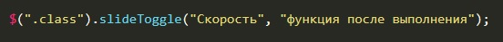
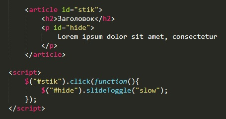

Функция slideToggle - позволяет плавно отобразить или скрыть элемент. Если изначально элемент отображается, то он будет скрыт, если элемент скрыт, то он будет отображен. Пример как работает эта функция можно посмотреть нажав по заголовку статьи.
Синтаксис:
Пример:
Скорость можно указать как и в милисекундах, так и словом (slow = 600 милисекунд, fast = 200 милисекунд)